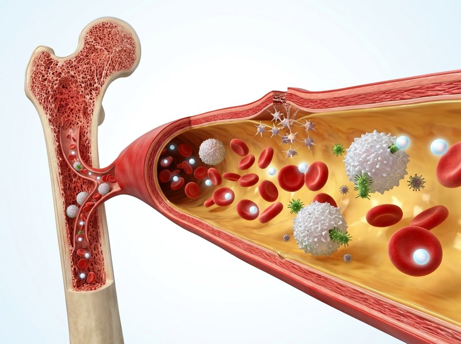
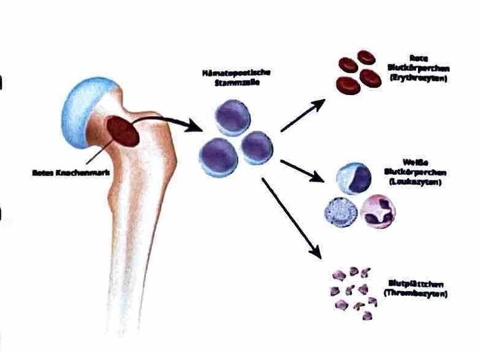
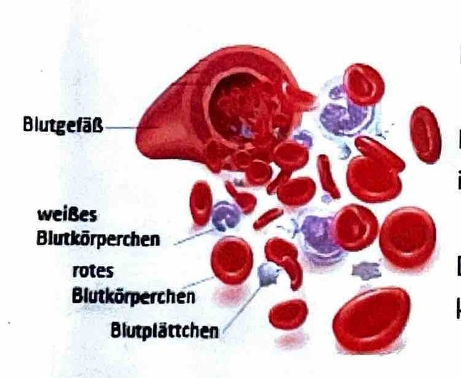

Seite 1 & 2
🩸 1. Das Blut — „Ein flüssiges Gewebe“
La sangre: su origen en la médula ósea de los huesos largos, el plasma líquido y los 3 componentes sólidos


🦴 Wo bildet sich das Blut? „Das Blut ist ein ‚flüssiges Gewebe‘. Es besteht aus einem flüssigen Teil, dem Blutplasma und einem festen Teil. Das Blut bildet sich im Knochenmark der langen Knochen.“
💡 Tipp: La sangre es un «tejido líquido» y se forma en la médula ósea de los huesos largos (Knochenmark der langen Knochen).
💧 Flüssiger Teil: das Blutplasma (im Comic: gelb!)
- Wichtigste Funktion: Der Transport von verschiedenen Stoffen. Su función más importante es el transporte de diversas sustancias.
- Wer lebt darin? „In ihm leben die Blutkörperchen und die Blutplättchen.“ En él viven los glóbulos sanguíneos y las plaquetas.
🧱 Fester Teil (3 Bestandteile)
-
🔴 Rote Blutkörperchen (glóbulos rojos / rote Blutzellen):
„Die Funktion der roten Blutkörperchen ist der Transport von Sauerstoff und Kohlenstoffdioxid.“ (Im Comic auf S. 2: rot anmalen!) Transportan oxígeno y dióxido de carbono. -
🛡️ Weiße Blutkörperchen (glóbulos blancos / weiße Blutzellen):
„Die weißen Blutkörperchen kämpfen gegen Viren und Bakterien.“ (Im Comic auf S. 2: das „B“ blau anmalen!) Luchan contra los virus y las bacterias. -
🩹 Blutplättchen (plaquetas):
„Die Blutplättchen reparieren zerstörte Blutgefäße und verhindern, dass das Blut nicht weiter fließt. Also, es gerinnt (se coagula).“ (Im Comic auf S. 2: braun anmalen!) Reparan los vasos sanguíneos dañados logrando que la sangre se coagule (es gerinnt).